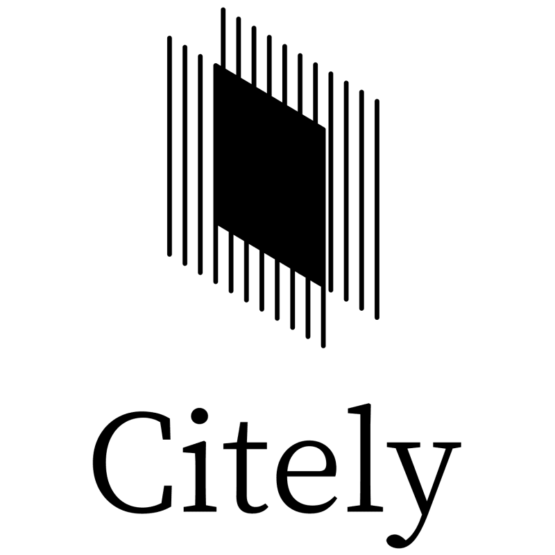

Can we accept
stablecoins —
and where?
stablecoins —
and where?
FIRST-MARKET
SHORTLIST
SHORTLIST

The same team faces a different regulatory decision at every stage.
Machine-assured research for operational preparation — not human-reviewed legal advice.
Expand by policy domain — without duplicating the evidence, identity or delivery infrastructure.
Payments, listings, custody and launch playbooks
Models, data, deployment and market-entry playbooks
Protocols, tokens and onchain business-model playbooks